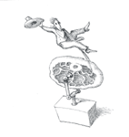

ハンバーガーとタルタル・ステーキ
誰もがいちどは持つ疑問。「なかにハムは入ってないのに、なぜハン（ハム）バーガーっていうの？」
ハンバーガーの歴史は中世にさかのぼる。ロシアの大草原を部族たちが放浪していたころのことだった。タタール人として知られるこれらの部族たちは、牛を盗み、その肉を細かく刻み、生のままで食べた。彼らは切った肉を、鞍と馬のあいだにはさんでいたと伝えられている。馬に乗りっぱなしのきびしい一日が終わると、鞍と馬のあいだの生の肉は、やわらかく、噛みやすくなっていた！
旅をつづけながら、タタール人は自分たちの食べ物を人々に伝えていった。そのあいだに、塩、コショウ、タマネギの汁が、細く切った生の肉に添えられるようになった。この料理が、タルタル・ステーキとして知られるようになったのである。
タタール人はドイツ人とも貿易し、ドイツの港町ハンブルクの住人たちに、細く切った肉料理を伝えた。ドイツ人たちも、タタール人が食べていたように、たいていは肉を生で食べた。しかし、ときには焼いて食べることもあった。まもなく、焼いて食べるやりかたは、ハンバーグ・ステーキとして知られるようになった。
ハンバーグ・ステーキは１８８０年代、ドイツの移民とともにアメリカに伝わったと言われている。これらの移民たちはハンブルクからきた人たちだったので、ハンバーガー（ハンブルク人）として知られていて、まもなく、ハンバーグ・ステーキもハンバーガーという名で知られるようになった。
アメリカの３つの町が、パンにはさんだハンバーガーをはじめて作ったのは、自分たちの町だと主張している。テキサス州アセンズ、ニューヨーク州ハンバーグ、ウィスコンシン州シーモア。しかし、多くの情報源が伝えているのは、ハンバーガー（バンズにはさんだ）が広まったのは、１９０４年のセント・ルイス万国博覧会に登場してからだということである。

ホットケーキのように売れる
意味：飛ぶように売れること
ホットケーキは、パンケーキ、グリドル・ケーキ、フラップジャック・ケーキともよばれている。１６００年代の初め、ホットケーキは定期市やお祭り、そのほかにぎやかな行事で売られていた。こういった記念日での、おやつのベストセラーになっていった（現在でも、パンケーキの朝食は大変なお金を稼ぎだしている）。
１９世紀には、この言葉は一般的に使われるようになり、すごい人気商品のことを、ホットケーキのように売れるというようになった。